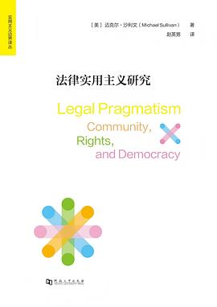

译
法律实用主义研究
内容简介
本书以清晰简明的文风阐明了实用主义有关权利、共同体以及民主生活的基本立场，为理解医疗、教育、婚姻和政治制度等议题提供了具有现实意义的理论框架。从古典实用主义出发，本书正本清源地回应了德沃金与波斯纳对于实用主义的误解，并将法律实用主义定位为有关现代社会共同生活的反思性与批评性考察，是当代法律实用主义研究的重要作品。
译后记
承蒙周靖兄邀请，我有机会译介迈克尔·沙利文（Michael Sullivan）教授的《法律实用主义研究》一书。周兄是国内研究“匹兹堡学派”，特别是罗伯特·布兰顿实用主义分析哲学理论的佼佼者。书目虽然是他“指定”，但我信任他的眼光，而且在初读之后我便觉得与此书“一见如故”。实用主义是哲学中一个无法忽略的重要流派，对于研究哲学史以及分析哲学在当代的进展皆然。但在法理学领域，实用主义哲学资源与其所激发的法律现实主义立场，却向来是一个饱受忽略甚至人们对此讳莫如深的领域。实用主义注重从一个概念的“效果”来理解其“意义”。法律实用主义注重从司法裁判的后果来“反推”法官对于法律规范的解释。这意味着当法官在面对有关同一个法律规范的多种解释路径时，他需要做的不是探究法律的“真意”，而是评估每种解释路径可能导向的现实后果，以此确定自己应当选择何种解释做出裁判。如此一来，法律就并非颁行在制定法或凝结在判例中的“白纸黑字”，而是法庭上坐在法官席上的专业人员的言行举止。我们了解并预判法官的所作所为，就能够理解法律并对案件结果做出预测。
这种观点对于从事司法实务的人士来说，实在是太过平常。律师在为自己的客户提供咨询或展开辩护时，一直就在这样说，也是这样做的。法官在展开裁判时，也基本上是这样做的，只是未必这样说。毕竟，依法裁判是每位法官不可忽视的司法义务，可重视裁判的社会经济乃至政治道德后果同样是法官不可忽略的，这些因素有时甚至是司法实践中含义广泛的“法律”的题中应有之意。但是学院中的法学研究者们却对此观点提出了最强烈的质疑。他们担心法律实用主义立场会鼓励视法律为无物的法官，为他们根据个人偏好而非法律做出裁判提供充分的操作空间，甚至成为他们行为不端的冠冕堂皇的借口。可是，法律能够全方位无死角地指引法官的裁判吗？法律规则本身能够百分之百决定案件的结果吗？法官的自由裁量只有百害而无一利吗？法治的实现完全等同于严格遵循每一个法律规范吗？
这恐怕是一些无解的难题。从法律在人类社会中出现的那一刻起，围绕这些问题的种种讨论乃至对立便不绝于耳（想想古希腊悲剧《安提戈涅》！）。在如此漫长的讨论中，有两种立场难分彼此。一种是形式主义（formalism）。它强调法律作为一种规范的逻辑性、严密性与体系性，主张任何法律问题都能够在法律（规范）本身之中找到答案，法律因此是一个没有漏洞的整体——如果有漏洞，法律人（法学家、法官与律师）可以通过种种技术（法律解释、法律推理与法律论证）加以修补。因此，法官的裁判是对已有法律的一种“发现”“寻找”甚至“报告”，而非法官具有创造性的活动。另一种是现实主义（realism）。它强调人类行为的复杂性、法律规范的矛盾性以及规范与行为之间的缝隙，主张法律（规范）或许是决定案件结果的一个（重要）因素，但却并非唯一因素。在这个意义上，法官的司法裁判具有一定创造性，法官在具体而微的层面实际发挥着立法者的功能。
这两种对立的立场被不同学者以不同方式结合在自己的学说之中。在当代法理学讨论中最具影响力的一种学说，就是赫伯特·哈特（H.L.A. Hart）在1961年出版的《法律的概念》中提出的观点。他认为任何一种运用语言表述的法律规范都会存在语义确定的区域，以及语义不够确定的区域。比如，我们都知道“头发稀少”这个词的意义，但是这个词与“头发浓密”之间的确切界线是什么，我们则莫衷一是。哈特说这样的情形在法律中很常见。比如，有法律规定不允许任何车辆（vehicles）进入公园。可是在紧急时刻，救护车是否可以进入公园呢？小孩子的轮滑或者小推车是否可以进入呢？因此，哈特总结道，当一个案件的事实归属于法律规范语义确定的范围时，法官就可以遵照法律做出裁判；相反，当案件事实归属于法律规范语义不够确定的范围时，法官就处于“无法可依”的情况，需要依据法律的目的或后果展开裁量。
哈特观点的核心在于，承认法律在一定范围内是不够确定的，法律并不能在方方面面为法官裁判提供指引，因此法官在一定范围内具有自由裁量的权力或操作空间。从直觉来看，这种观点非常具有吸引力。但仔细分析，我们不难会发现这样一个难题：法治的基本要求是法律要提前设立，以此确定我们的权利义务；哈特允许一定范围内的法官自由裁量，其实就意味着我们在这些范围内的行为会受到事后立法的规制，此时法律不仅溯及既往，而且我们的权利以及信赖利益也无从得到保障。如此看来，哈特的学说无法充分说明现实生活中的司法实践。
于是，许多学者提出替代性学说，希望克服哈特理论的问题。这些观点仍可以被归纳为两个立场。其一是罗纳德·德沃金（Ronald Dworkin）的权利学说。德沃金强调法律是原则的化身，而原则是权利的体现。在他看来，我们的法律（无论是单个规范，还是法律体系本身）体现出我们的政治传统对于自由与平等等权利的保护与承诺。在遇到棘手的案件时，如果无法单纯依靠法律规范做出裁判，法官可以诉诸我们法律所体现的这些权利或原则，将之具体运用于手头案件。其二是法律实用主义的立场。这是一个由众多人物、学说、观点、命题以及思潮（比如，社会学法学、法律现实主义、法律与经济分析、法律与社会研究、批判法学运动等）聚合而成的一种思维倾向。这种立场倾向于认为，德沃金的权利学说其实是以法律外衣掩盖了真正决定案件结果的因素。这些真正的决定因素，就是经济利益、社会效益抑或政治考量，等等。
这两种立场自上世纪60年代以来便彼此论辩不休。在这个同样漫长的论辩中，出现了两个对于我们理解法律实用主义非常重要的变化。第一个变化是，随着论辩的深入，人们倾向于将权利理论和法律实用主义抽象为两种彼此对立的意识形态，并想当然地认为法律实用主义并不重视个体权利的保护。第二个变化是，哲学中的实用主义本身是一个非常宽泛且易遭受误解的思想运动，法律实用主义就更是如此；许多法律实用主义者，比如非常著名的理查德·波斯纳，提出了以经济分析取代法律分析的“反哲学”甚至“反法学”的主张。这两个变化不仅模糊了法律实用主义的确切观点，也使得法律实用主义在法理学研究中受到了“污名化”。“法律实用主义”同罔顾法律、胆大妄为、冷酷无情、漠视个人权利以及“外行”这样的字眼联系在了一起。一个趣事是读硕士的时候，我的导师请来当时在西雅图华盛顿大学（University of Washington）任教的一位教授讲授法律推理。我们问这位教授，是否可以认为法官根据裁判后果而选择不同的推理路径？教授笑了笑说，在美国可以这样说，在英国可能就有些粗鲁了（虽然同时普通法国家，英国更加固守遵循先例原则或“死板”一些，美国则向来实用主义色彩浓厚）。
那么法律实用主义是否确实如此呢？恐怕并不见得。如果我们认真阅读深受实用主义哲学启发的法律现实主义先驱奥利弗·温德尔·霍姆斯大法官（他是孕育美国实用主义思潮的“形而上学俱乐部”成员）的作品，我们会看到他的观点其实相当温和。他不仅肯定法律解释等方法之于司法裁判的重要意义，也肯定了从哲学和逻辑学角度研究法律规范的价值。只不过他强调法学和司法裁判的范围不止于此，我们还要熟悉法律的运作，譬如律师会如何运用法律实现当事人的利益，法官又如何运用法律实现社会目标。此外，一直归属于他的“预测学说”以及由此提出的“法律的生命不在于逻辑，而在于经验”，恐怕也是一种误解。依据通行说法，似乎霍姆斯及其所代表的法律现实主义者都认为，法律并非白纸黑字的规则而是对于法官行为的预测。霍姆斯在其著名的演讲“法律的道路”中的确说过这样的话。可这篇演讲的受众是波士顿大学法学院的学生。当时美国法学院的氛围深受法律形式主义影响，霍姆斯只是想提醒有志于从事法律实务的年轻人当心这种氛围所导致的盲目与狭隘。同样的情况也出现于法律现实主义的核心代表人物卡尔·N. 卢埃林（Karl N. Llewellyn）身上。他在面向法学新生的系列讲座文稿《荆棘丛》（The Bramble Bush）中表达了类似于霍姆斯的看法，被后世论者视为卢埃林赞同预测学说的证据。可这忽略了作者与作品的语境，以至于法律现实主义权威威廉·特文宁（William Twining）戏谑地说，几十年来卢埃林就因为自己讲座中短短一句话而被盖棺定论了。
此外，即便是一直被视为法律实用主义或法律现实主义立场对立面的德沃金的学说，似乎也并非如其表面那样与实用主义立场水火不容。德沃金的确在自己的重要作品《法律帝国》（Law’s Empire）中将法律实用主义和法律现实主义作为自己的论敌。可是他对这两种立场的刻画却相当任意和随便。他的表述似乎是综合了理查德·罗蒂的实用主义哲学、理查德·波斯纳的法律经济分析、卡尔·卢埃林与杰罗姆·弗兰克（Jerome Frank）彼此有别的法律现实主义（通常来说，卢埃林是法律现实主义的社会学阵营代表人物，而弗兰克则是心理学阵营的代表人物）、罗伯托·昂格尔（Roberto Unger）与邓肯·肯尼迪（Duncan Kennedy）的批判法学运动观点，而不指向其中任何一位具体人物的学说，因此显得颇为宽泛。同时，他自己的学说中包含着非常浓厚的法律现实主义色彩。譬如，他认为一切法律问题都存在“唯一正解”（one single right answer）这个表述原原本本出现在卢埃林的重要代表作《普通法传统》（The Common Law Tradition）中论述上诉法院实现法律稳定性与确定性的技术传统之中。
因此，当代法理学研究中亟需一场有关法律现实主义及其实用主义哲学资源的“正本清源”运动。我们需要更为深入地探究在解释司法裁判时实用主义的洞见与局限。这不仅涉及认真探讨法学家们的论述——无论是德沃金的学说，还是波斯纳的理论，在近年来都得到了相当程度地重新讨论，许多论者指出德沃金的权利学说可能深受实用主义影响，而波斯纳可能并非如其所自称的那样是一位典型的实用主义者。这还涉及更加认真地剖析实用主义本身的意涵。实用主义是美国法律思想的底色，而在当代司法实践中几乎无人不是法律现实主义者。可究竟怎样的法律思维与法律理论立场才能接续和发展詹姆斯、皮尔士与杜威所代表的古典实用主义哲学，却是一个严肃的理论问题。
正是在这个意义上，本书《法律实用主义》虽然篇幅不长，却是一部值得认真对待的重要作品。本书作者迈克尔·沙利文教授是范德堡大学哲学博士与耶鲁大学法律博士，身兼法律与哲学双重训练的他自进入埃默里大学哲学系任教伊始，就致力于实用主义哲学与法理学一般理论的研究。这其实是一条通往窄门的少有人走的艰难旅途。如前所述，实用主义理论资源一直游离于英美法学界的主流立场，在哲学系中展开法律理论研究也并非易事。在两个虽有关联但毕竟彼此迥异的科系与领域中寻找连接点并尝试发表，自然又是难上加难。但沙利文教授做得非常棒。尽管我比较关注德沃金理论与法律实用主义理论，但我仍能在阅读这部出版于2007年的著作中感受到理论的惊喜与观点的冲击。在我检索网络尝试联系他时，我看到了埃默里大学哲学系发布的讣告。沙利文教授在2022年1月31日突发疾病去世，享年56岁。在悼念文字中，他的学生深情回忆了他对教学和指导学生的投入。这样的激情也体现在他的文字中，他所认同的杜威式实用主义哲学与法律理论之中。我希望自己的译文无损于这一品质。
最后简短交待一下自己的翻译。感谢上海社科院牛婷婷老师的引介，我与周靖兄得以在网络“云端”相聚。我在北大求学期间常常选修和旁听汤姆·洛克摩尔（Tom Rockmore）教授有关德国观念论和分析哲学的课程。受他影响，我一直对罗伯特·布兰顿与约翰·麦克道威尔的理论保持关注。同时，我也深受访学期间的合作导师布莱恩·Z. 塔玛纳哈（Brian Z. Tamanaha）教授的影响，非常关注古典实用主义哲学资源。但坦率来说，我的哲学素养一般，阅读这些当代重要学者的著作有一些难度。陈亚军老师、孙宁老师以及周兄的文章著作是我常常参考的。因此，当周兄邀请我在其实用主义哲学译丛中担任本书的翻译时，我几乎毫不犹豫地答应了。衷心希望这本小书不仅能够唤起国内哲学界对于法律理论的兴趣，也能够推动国内法律理论研究更为深入地反思法律实用主义与现实主义的理论脉络和学说资源。
赵英男
2024年8月15日
这种观点对于从事司法实务的人士来说，实在是太过平常。律师在为自己的客户提供咨询或展开辩护时，一直就在这样说，也是这样做的。法官在展开裁判时，也基本上是这样做的，只是未必这样说。毕竟，依法裁判是每位法官不可忽视的司法义务，可重视裁判的社会经济乃至政治道德后果同样是法官不可忽略的，这些因素有时甚至是司法实践中含义广泛的“法律”的题中应有之意。但是学院中的法学研究者们却对此观点提出了最强烈的质疑。他们担心法律实用主义立场会鼓励视法律为无物的法官，为他们根据个人偏好而非法律做出裁判提供充分的操作空间，甚至成为他们行为不端的冠冕堂皇的借口。可是，法律能够全方位无死角地指引法官的裁判吗？法律规则本身能够百分之百决定案件的结果吗？法官的自由裁量只有百害而无一利吗？法治的实现完全等同于严格遵循每一个法律规范吗？
这恐怕是一些无解的难题。从法律在人类社会中出现的那一刻起，围绕这些问题的种种讨论乃至对立便不绝于耳（想想古希腊悲剧《安提戈涅》！）。在如此漫长的讨论中，有两种立场难分彼此。一种是形式主义（formalism）。它强调法律作为一种规范的逻辑性、严密性与体系性，主张任何法律问题都能够在法律（规范）本身之中找到答案，法律因此是一个没有漏洞的整体——如果有漏洞，法律人（法学家、法官与律师）可以通过种种技术（法律解释、法律推理与法律论证）加以修补。因此，法官的裁判是对已有法律的一种“发现”“寻找”甚至“报告”，而非法官具有创造性的活动。另一种是现实主义（realism）。它强调人类行为的复杂性、法律规范的矛盾性以及规范与行为之间的缝隙，主张法律（规范）或许是决定案件结果的一个（重要）因素，但却并非唯一因素。在这个意义上，法官的司法裁判具有一定创造性，法官在具体而微的层面实际发挥着立法者的功能。
这两种对立的立场被不同学者以不同方式结合在自己的学说之中。在当代法理学讨论中最具影响力的一种学说，就是赫伯特·哈特（H.L.A. Hart）在1961年出版的《法律的概念》中提出的观点。他认为任何一种运用语言表述的法律规范都会存在语义确定的区域，以及语义不够确定的区域。比如，我们都知道“头发稀少”这个词的意义，但是这个词与“头发浓密”之间的确切界线是什么，我们则莫衷一是。哈特说这样的情形在法律中很常见。比如，有法律规定不允许任何车辆（vehicles）进入公园。可是在紧急时刻，救护车是否可以进入公园呢？小孩子的轮滑或者小推车是否可以进入呢？因此，哈特总结道，当一个案件的事实归属于法律规范语义确定的范围时，法官就可以遵照法律做出裁判；相反，当案件事实归属于法律规范语义不够确定的范围时，法官就处于“无法可依”的情况，需要依据法律的目的或后果展开裁量。
哈特观点的核心在于，承认法律在一定范围内是不够确定的，法律并不能在方方面面为法官裁判提供指引，因此法官在一定范围内具有自由裁量的权力或操作空间。从直觉来看，这种观点非常具有吸引力。但仔细分析，我们不难会发现这样一个难题：法治的基本要求是法律要提前设立，以此确定我们的权利义务；哈特允许一定范围内的法官自由裁量，其实就意味着我们在这些范围内的行为会受到事后立法的规制，此时法律不仅溯及既往，而且我们的权利以及信赖利益也无从得到保障。如此看来，哈特的学说无法充分说明现实生活中的司法实践。
于是，许多学者提出替代性学说，希望克服哈特理论的问题。这些观点仍可以被归纳为两个立场。其一是罗纳德·德沃金（Ronald Dworkin）的权利学说。德沃金强调法律是原则的化身，而原则是权利的体现。在他看来，我们的法律（无论是单个规范，还是法律体系本身）体现出我们的政治传统对于自由与平等等权利的保护与承诺。在遇到棘手的案件时，如果无法单纯依靠法律规范做出裁判，法官可以诉诸我们法律所体现的这些权利或原则，将之具体运用于手头案件。其二是法律实用主义的立场。这是一个由众多人物、学说、观点、命题以及思潮（比如，社会学法学、法律现实主义、法律与经济分析、法律与社会研究、批判法学运动等）聚合而成的一种思维倾向。这种立场倾向于认为，德沃金的权利学说其实是以法律外衣掩盖了真正决定案件结果的因素。这些真正的决定因素，就是经济利益、社会效益抑或政治考量，等等。
这两种立场自上世纪60年代以来便彼此论辩不休。在这个同样漫长的论辩中，出现了两个对于我们理解法律实用主义非常重要的变化。第一个变化是，随着论辩的深入，人们倾向于将权利理论和法律实用主义抽象为两种彼此对立的意识形态，并想当然地认为法律实用主义并不重视个体权利的保护。第二个变化是，哲学中的实用主义本身是一个非常宽泛且易遭受误解的思想运动，法律实用主义就更是如此；许多法律实用主义者，比如非常著名的理查德·波斯纳，提出了以经济分析取代法律分析的“反哲学”甚至“反法学”的主张。这两个变化不仅模糊了法律实用主义的确切观点，也使得法律实用主义在法理学研究中受到了“污名化”。“法律实用主义”同罔顾法律、胆大妄为、冷酷无情、漠视个人权利以及“外行”这样的字眼联系在了一起。一个趣事是读硕士的时候，我的导师请来当时在西雅图华盛顿大学（University of Washington）任教的一位教授讲授法律推理。我们问这位教授，是否可以认为法官根据裁判后果而选择不同的推理路径？教授笑了笑说，在美国可以这样说，在英国可能就有些粗鲁了（虽然同时普通法国家，英国更加固守遵循先例原则或“死板”一些，美国则向来实用主义色彩浓厚）。
那么法律实用主义是否确实如此呢？恐怕并不见得。如果我们认真阅读深受实用主义哲学启发的法律现实主义先驱奥利弗·温德尔·霍姆斯大法官（他是孕育美国实用主义思潮的“形而上学俱乐部”成员）的作品，我们会看到他的观点其实相当温和。他不仅肯定法律解释等方法之于司法裁判的重要意义，也肯定了从哲学和逻辑学角度研究法律规范的价值。只不过他强调法学和司法裁判的范围不止于此，我们还要熟悉法律的运作，譬如律师会如何运用法律实现当事人的利益，法官又如何运用法律实现社会目标。此外，一直归属于他的“预测学说”以及由此提出的“法律的生命不在于逻辑，而在于经验”，恐怕也是一种误解。依据通行说法，似乎霍姆斯及其所代表的法律现实主义者都认为，法律并非白纸黑字的规则而是对于法官行为的预测。霍姆斯在其著名的演讲“法律的道路”中的确说过这样的话。可这篇演讲的受众是波士顿大学法学院的学生。当时美国法学院的氛围深受法律形式主义影响，霍姆斯只是想提醒有志于从事法律实务的年轻人当心这种氛围所导致的盲目与狭隘。同样的情况也出现于法律现实主义的核心代表人物卡尔·N. 卢埃林（Karl N. Llewellyn）身上。他在面向法学新生的系列讲座文稿《荆棘丛》（The Bramble Bush）中表达了类似于霍姆斯的看法，被后世论者视为卢埃林赞同预测学说的证据。可这忽略了作者与作品的语境，以至于法律现实主义权威威廉·特文宁（William Twining）戏谑地说，几十年来卢埃林就因为自己讲座中短短一句话而被盖棺定论了。
此外，即便是一直被视为法律实用主义或法律现实主义立场对立面的德沃金的学说，似乎也并非如其表面那样与实用主义立场水火不容。德沃金的确在自己的重要作品《法律帝国》（Law’s Empire）中将法律实用主义和法律现实主义作为自己的论敌。可是他对这两种立场的刻画却相当任意和随便。他的表述似乎是综合了理查德·罗蒂的实用主义哲学、理查德·波斯纳的法律经济分析、卡尔·卢埃林与杰罗姆·弗兰克（Jerome Frank）彼此有别的法律现实主义（通常来说，卢埃林是法律现实主义的社会学阵营代表人物，而弗兰克则是心理学阵营的代表人物）、罗伯托·昂格尔（Roberto Unger）与邓肯·肯尼迪（Duncan Kennedy）的批判法学运动观点，而不指向其中任何一位具体人物的学说，因此显得颇为宽泛。同时，他自己的学说中包含着非常浓厚的法律现实主义色彩。譬如，他认为一切法律问题都存在“唯一正解”（one single right answer）这个表述原原本本出现在卢埃林的重要代表作《普通法传统》（The Common Law Tradition）中论述上诉法院实现法律稳定性与确定性的技术传统之中。
因此，当代法理学研究中亟需一场有关法律现实主义及其实用主义哲学资源的“正本清源”运动。我们需要更为深入地探究在解释司法裁判时实用主义的洞见与局限。这不仅涉及认真探讨法学家们的论述——无论是德沃金的学说，还是波斯纳的理论，在近年来都得到了相当程度地重新讨论，许多论者指出德沃金的权利学说可能深受实用主义影响，而波斯纳可能并非如其所自称的那样是一位典型的实用主义者。这还涉及更加认真地剖析实用主义本身的意涵。实用主义是美国法律思想的底色，而在当代司法实践中几乎无人不是法律现实主义者。可究竟怎样的法律思维与法律理论立场才能接续和发展詹姆斯、皮尔士与杜威所代表的古典实用主义哲学，却是一个严肃的理论问题。
正是在这个意义上，本书《法律实用主义》虽然篇幅不长，却是一部值得认真对待的重要作品。本书作者迈克尔·沙利文教授是范德堡大学哲学博士与耶鲁大学法律博士，身兼法律与哲学双重训练的他自进入埃默里大学哲学系任教伊始，就致力于实用主义哲学与法理学一般理论的研究。这其实是一条通往窄门的少有人走的艰难旅途。如前所述，实用主义理论资源一直游离于英美法学界的主流立场，在哲学系中展开法律理论研究也并非易事。在两个虽有关联但毕竟彼此迥异的科系与领域中寻找连接点并尝试发表，自然又是难上加难。但沙利文教授做得非常棒。尽管我比较关注德沃金理论与法律实用主义理论，但我仍能在阅读这部出版于2007年的著作中感受到理论的惊喜与观点的冲击。在我检索网络尝试联系他时，我看到了埃默里大学哲学系发布的讣告。沙利文教授在2022年1月31日突发疾病去世，享年56岁。在悼念文字中，他的学生深情回忆了他对教学和指导学生的投入。这样的激情也体现在他的文字中，他所认同的杜威式实用主义哲学与法律理论之中。我希望自己的译文无损于这一品质。
最后简短交待一下自己的翻译。感谢上海社科院牛婷婷老师的引介，我与周靖兄得以在网络“云端”相聚。我在北大求学期间常常选修和旁听汤姆·洛克摩尔（Tom Rockmore）教授有关德国观念论和分析哲学的课程。受他影响，我一直对罗伯特·布兰顿与约翰·麦克道威尔的理论保持关注。同时，我也深受访学期间的合作导师布莱恩·Z. 塔玛纳哈（Brian Z. Tamanaha）教授的影响，非常关注古典实用主义哲学资源。但坦率来说，我的哲学素养一般，阅读这些当代重要学者的著作有一些难度。陈亚军老师、孙宁老师以及周兄的文章著作是我常常参考的。因此，当周兄邀请我在其实用主义哲学译丛中担任本书的翻译时，我几乎毫不犹豫地答应了。衷心希望这本小书不仅能够唤起国内哲学界对于法律理论的兴趣，也能够推动国内法律理论研究更为深入地反思法律实用主义与现实主义的理论脉络和学说资源。
赵英男
2024年8月15日
译后记全文，提取自作者译稿。
评论